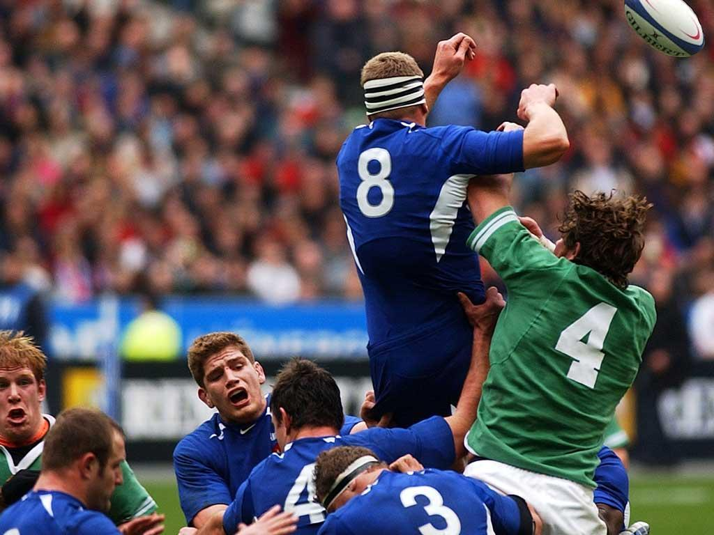

|  home |
Forme antiche di giochi con la palla sono sempre esistite in ogni angolo del pianeta: fra queste, le più note sono l'episkyros greco, l'harpastum romano, il calcio storico fiorentino e la soule francese. In origine il termine inglese football, contrariamente a quello che si pensa, non indicava necessariamente giochi in cui era previsto calciare il pallone, ma tutti quelli praticati dagli artigiani e dai contadini "a piedi" (to play at ball on foot, da cui il sostantivo moderno football), diversamente dai nobili che utilizzavano i cavalli per i propri passatempi. Nel corso dei secoli, i vari football furono introdotti in molte public schools inglesi, con regolamenti dunque differenti sia riguardo alla forma del pallone e al modo di maneggiarlo o calciarlo, sia al numero di giocatori in campo.
La leggenda attribuisce a William Webb Ellis, uno studente della scuola di Rugby, l'invenzione dell'omonimo gioco: nel 1823, in occasione di una partita di football giocato con regole ancora non standardizzate, William Webb Ellis raccolse la palla con le mani e iniziò a correre verso la linea di fondo campo avversaria per poi schiacciarla oltre la linea di fondo campo urlando: "META!". questo gesto stupì ed incuriosì molte persone, che iniziarono a praticare questo "sport". in onore di William Webb Ellis è tutt'ora presente una statua di bronzo davanti alla scuola dove è stato "inventato" il grande sport del rugby. La mancanza di uniformità di regole fra i vari modi di giocare a football causò una prima, grande, scissione: nel 1863 i rappresentanti di un gruppo di club inglesi decise di adottare le Regole di Cambridge, in parte modificate, e fondarono la Football Association, dando così vita a quello che sarà conosciuto come Association Football o Soccer. I club che mantennero le Regole di Rugby fondarono, a loro volta, nel 1871, il proprio organismo ufficiale, la Rugby Football Union.
Il secondo scisma avvenne all'interno della Rugby Football Union nel 1895 quando, per problemi di natura sociale ed economica, alcuni club del nord dell'Inghilterra formarono la Northern Rugby Football Union, divenuta in seguito la Rugby Football League, la quale ben presto iniziò ad apportare profondi cambiamenti alle regole, fino ad arrivare ad una versione del rugby football decisamente diversa da quella gestita dalla RFU.
Dal momento che le versioni ufficiali del rugby erano a quel punto due, si rese necessario distinguerli anche nel nome: il rugby union era quello gestito dalla RFU e il rugby league quello disciplinato dalla RFL.